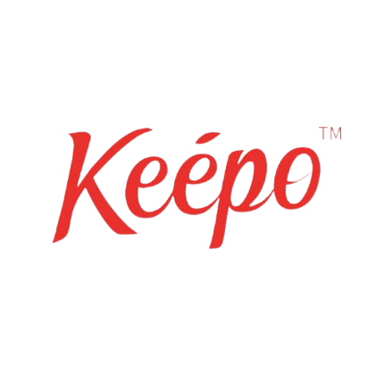

Work Experience

Backyard Café
Front-of-House (FOH)
February 2022
- Provided fast, kind, and accurate customer service by ensuring all orders were processed efficiently and with a friendly attitude.
- Prepared daily reports using Excel and Google Sheets, analyzing sales data and identifying trends to improve operations.
- Resolved customer complaints efficiently by actively listening to their concerns and offering appropriate solutions to ensure satisfaction.
- Shared product knowledge with customers, educating them about menu items and promotions to enhance their dining experience.
FOH Supervisor
October 2022 - 2024
- Ensured the team delivers fast, friendly, and accurate service by providing ongoing training and feedback to staff members.
- Managed ordering of soft beverages and cash handling after service, maintaining accurate inventory levels and financial records.
- Handled printing of menus and managing orders for supplies, coordinating with vendors to ensure timely deliveries.
- Conducted weekly deposits to the CEO’s bank account, ensuring all financial transactions were properly documented.
- Surveyed customers for feedback using Google Forms to identify areas for improvement and implement changes to enhance service quality.
- Managed and monitored guest reservations, ensuring tables were allocated efficiently to maximize customer satisfaction.
- Trained new staff on POS features and system updates, ensuring they were equipped with the necessary skills to perform their roles effectively.
CheckinMe Scholarship Program
Team Lead & Digital Marketing Project
January 2025
- Led a team and guided them towards a common goal by fostering collaboration and setting clear objectives for each project phase.
- Managed the project, including planning and execution, ensuring deadlines were met and deliverables were of high quality.
- Created engaging digital content, including creative posters and videos, to promote the scholarship program and attract participants.

Keepo Cambodia
Digital Marketing Executive
February 2025
- Created posters, videos, and content for promotions, ensuring all materials aligned with the brand’s identity and marketing goals.
- Planned and ran RoadShow events to engage customers, coordinating logistics and ensuring smooth execution of activities.
- Involved in hiring and recruitment processes to support marketing initiatives, conducting interviews and evaluating candidates.